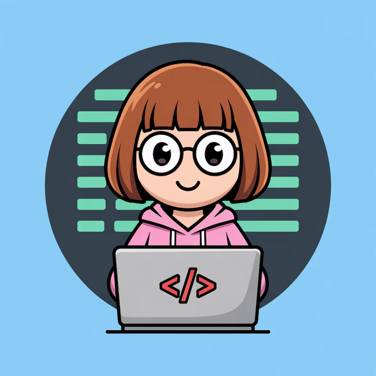

Universidad Católica San Pablo (UCSP) – Arequipa
Visitar sitio web de la UCSPSoy Alexandra, estudiante de Ciencia de Datos en la UCSP de Arequipa. Me considero una persona responsable, curiosa y comprometida con mis objetivos académicos y profesionales.
Me interesa aprender y desarrollarme profesionalmente. Disfruto la programación, la IA y las matemáticas, y deseo usar la tecnología para resolver problemas y generar un impacto positivo.

Pasa el cursor (o toca) un curso para resaltar sus conexiones.
Edificio P. José de Acosta, 4to Nivel
Campus San Lázaro: Urb. Campiña Paisajista Mz. H Lt. 32 – Quinta Vivanco
Arequipa, Perú
Correo electrónico: dc@ucsp.edu.pe
Teléfono: +51 (54) 605630. Anexo 648